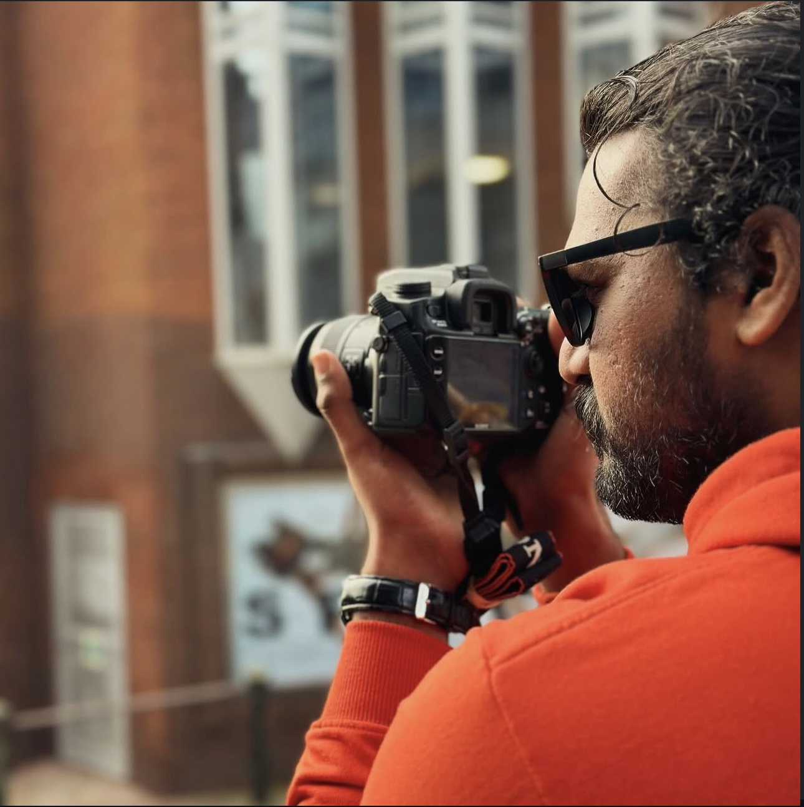
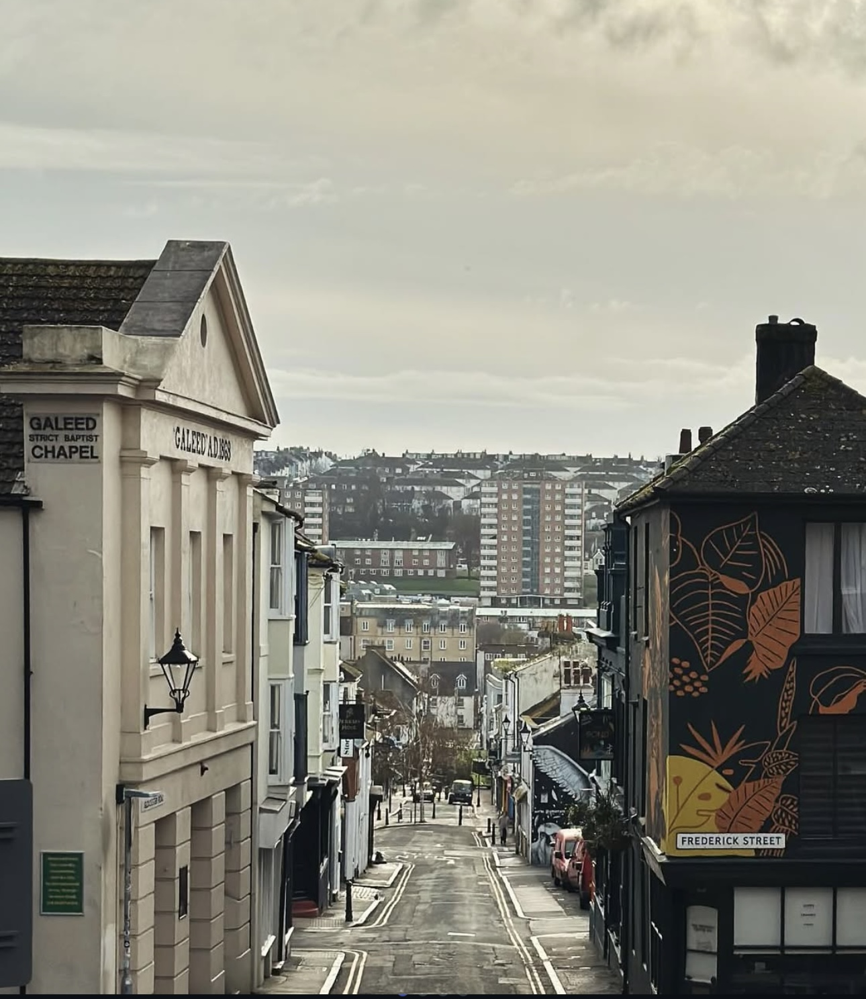
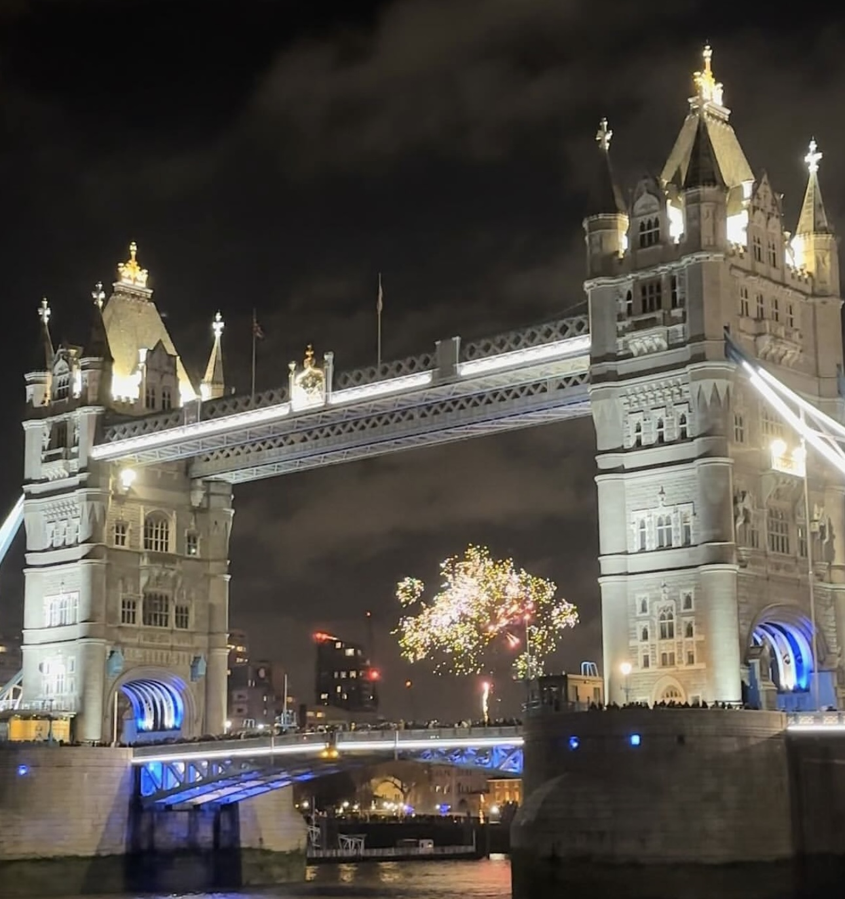
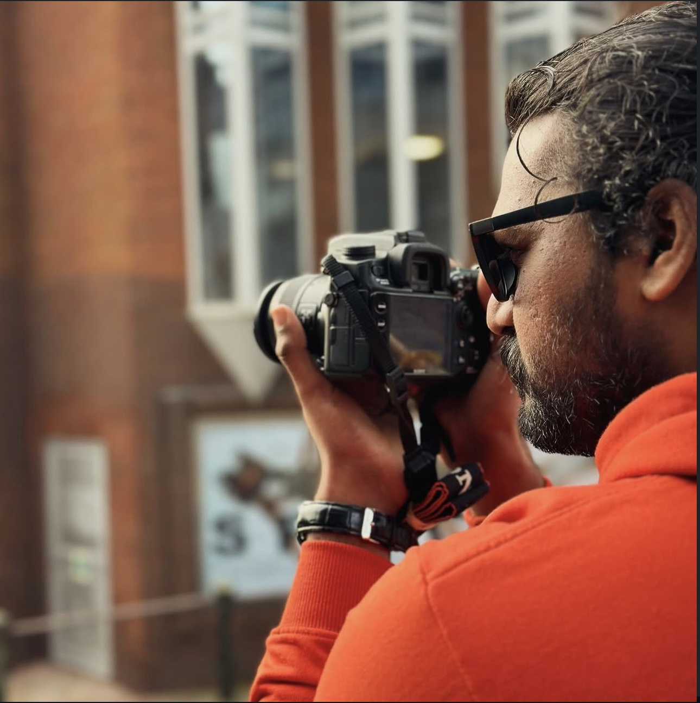
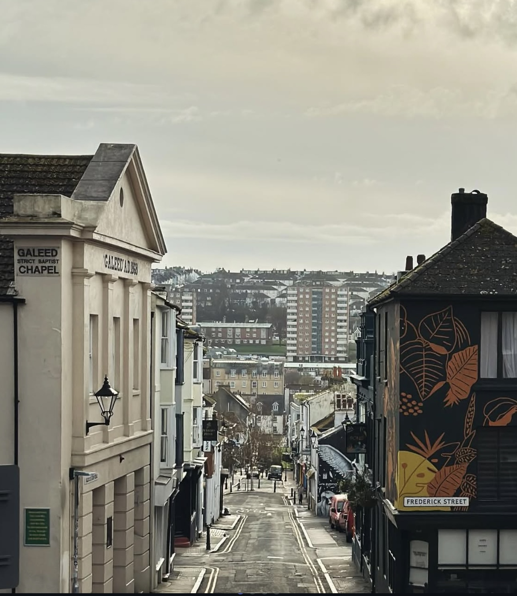
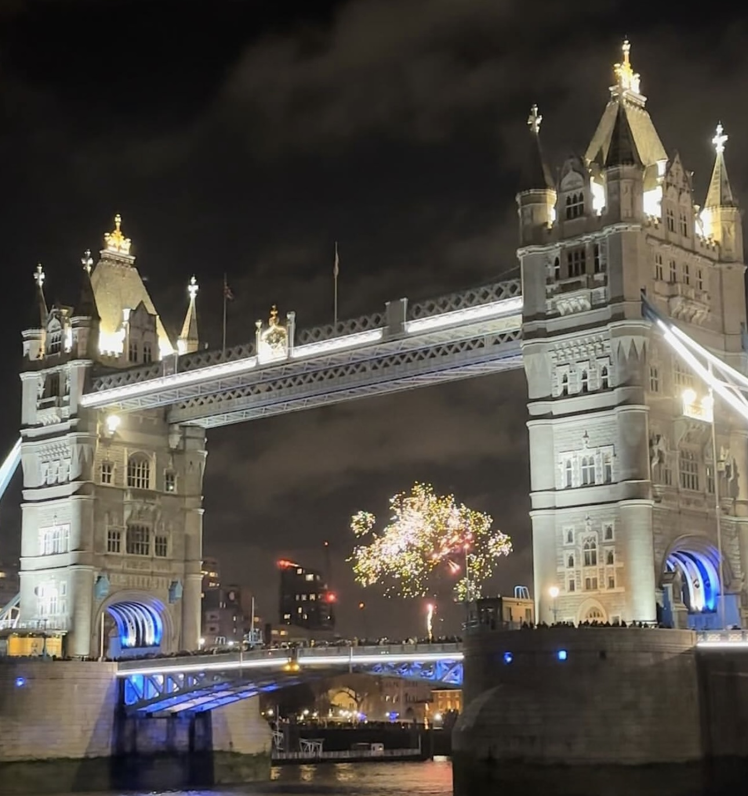

AAKY
Passionate about aircraft design, engineering analysis, creative photography, and hands-on projects. I love building things that fly and capturing meaningful moments.
Download CVI am Anil Kumar Yadav, an Aerospace Engineering enthusiast and passionate about simulation, design, and innovation — guided by Feynman's words: ‘What I cannot create, I do not understand.’ I love transforming ideas into real-world designs through CAD modelling, simulations, and physical prototyping.
With hands-on experience using industry-standard tools like STAR CCM+, FEM Analysis, ANSYS - MODAL and CFD, SOLIDWORKS, and CATIA v5, I specialize in aerodynamic modeling, design optimization, and simulation workflows. My academic and internship projects have ranged from VTOL aircraft and flutter analysis to UAV development and amphibious aircraft design.
My research interests focus on developing sustainable aviation technologies and improving aircraft efficiency. I combine analytical thinking with creative problem-solving to address complex engineering challenges in the aerospace industry. My goal is to contribute to the future of aviation with meaningful designs and innovative solutions.

Investigation of fluid flow, heat transfer, and aerodynamic characteristics of an amphibious aircraft design using ANSYS Fluent with steady and unsteady flow simulations.

Analysis of propulsive lift characteristics using advanced computational methods to understand flow patterns and lift generation in various configurations.
Development of computational models for VTOL aircraft configurations with tilted wing geometry and distributed propulsion systems to analyze performance characteristics.

Comprehensive analysis of pressure distribution patterns around structures experiencing flutter, examining structural responses and aerodynamic interactions at various conditions.

MSc research project analyzing pressure distribution during flutter using wind tunnel testing, 3D printed models, and precision instrumentation.
• Examine pressure distribution on a fluttering wing.
• Identify aerodynamic & structural aeroelastic responses.
• Wind tunnel experiments & measurement of Cp values.
• 3D printed wing with pressure taps.
• Water-jet cut testing frame.
• High-frequency sensor data acquisition.
• Mode shape & frequency extraction.
The study deepened understanding of flutter behavior, aeroelastic coupling, and structural vibration modes for practical aerospace engineering.
I have a strong passion for engineering design, especially in areas involving conceptual modelling, 3D CAD development, and simulation-driven refinement. I’ve worked on custom quadcopter and turbofan engine designs using tools like SOLIDWORKS, focusing on structure, aerodynamics, and realistic component integration. Through this design, I explored the challenges of Material Selection, systems integration, and iterative prototyping—skills I’m excited to apply to future engineering projects. I explored the challenges of Blades design using NACA series Airfoil and Spline design (Sounds easy but not true 😅 )


My experience spans across aerospace design, manufacturing, and research environments, giving me a practical understanding of how engineering concepts translate into real-world systems and components.
Alongside my academic degrees, I have completed several certifications that strengthened my foundations in physics, materials, cosmology, communication, and CAD tools.
Photography is where I combine technical observation with creativity. I enjoy capturing aviation, landscapes, architecture, and everyday moments that reflect mood, motion, and perspective.

 





Cooking has been a hands-on, creative outlet for me. I’ve worked in diverse kitchen environments and enjoyed learning about flavours, cultures, and teamwork in fast-paced service settings.

As part of the NCC Air Force Wing (2018–2021), I gained exposure to discipline, leadership, and teamwork, along with an early connection to aviation activities and aeromodelling.


My academic journey includes a Bachelor’s degree in Aerospace Engineering from Hindustan Institute of Technology and Science and an MSc from the University of Hertfordshire, UK. These experiences shaped my technical mindset, research skills, and international outlook.

Email:
aaky991220@gmail.com
WhatsApp (UK):
+44 7342 735271
WhatsApp (India):
+91 73973 78407
Location:
88 Northdown Road,
Hatfield AL10 8SW,
England, UK


✓ Message Sent Successfully!